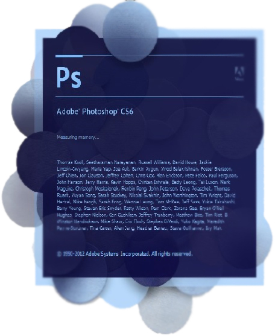
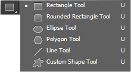
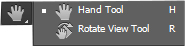
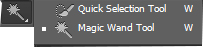

Hi everyone.Welcome to the second tutorial of Photoshop CS6.

Last day we talked about how to get a new file. From now on I consider that you have the knowledge to get a new file.
Here is the content of this lesson. Today I am going to teach you the parts of the
Tool bar, and their tasks.
So, let's get started.
This is tool bar. Let's know the tools one by one. In here I'm giving you a brief description only. I'll teach you how to work with them in a later tutorial.
As you can see there are 3 more items below Zoom tool. I'll describe them later.
- Move tool
- Marquee tool
- Lasso tool
- Magic tool
- Crop tool
- Eyedropper tool
- Healing brush tool
- Brush tool
- Clone stamp tool
- History brush tool
- Eraser tool
- Gradient tool
- Blur tool
- Dodge tool
- Pen tool
- Type tool
- Selection tool
- Rectangle tool 
- Hand tool 
- Zoom tool
Move tool is used to move selected things. After you click it, the cursor will change.
There are four tools inside marquee tool.
If you want to select a special part of a photo, this can be used. With Rectangular Marquee tool you can select a rectangle shaped part of a photo. With Elliptical Marquee tool you can select an elliptical shaped part of a photo. With other two tools you can select a single line row and a single line column.
This is also used to select special parts of photos. There is a difference between them. But I'll talk about it later.
There are differences among these tools. I'll talk about it when we talk about how to use them.
This tool is a wonderful tool. It's very useful when we edit a photo.
Magic wand tool is used to select similar color parts of a photo. It's easy to remove similar color parts of a photo using this.
Quick Selection Tool is somewhat similar to the Magic Wand in that it also selects pixels based on tone and color. But the Quick Selection Tool goes far beyond the Magic Wand's limited abilities by also looking for similar textures in the image, which makes it great at detecting the edges of objects.
The most popular way to crop an image is by using the Crop tool.
Perspective crop tool has been designed to easily fix common distortion and perspective problems in an image. In a later tutorial, we'll learn how it works.
The slice tools in Photoshop are particularly useful for Web designer's as these allow them to divide an image up into rectangular sections, and the slices can then be used in Photoshop to specify how each individual slice will be optimized, what file format a slice area should be saved in and what compression settings should be used.
Photoshop uses the foreground color to paint, fill, and stroke selections and the background color to make gradient fills and fill in the erased areas of an image. The foreground and background colors are also used by some special effects filters. You can designate a new foreground or background color using the Eyedropper tool.
The Eyedropper's cousin, the Color Sampler tool, looks like an eyedropper with a small target next to the icon. The Color Sampler tool can monitor changes to your image after you apply color-correction techniques and filters.
The ruler tool lets you measure distances and angles in an image.
The Note tool makes notes that can be attached to an image.
The Spot Healing Brush tool removes blemishes and objects.
The Healing Brush tool paints with a sample or pattern to repair imperfections in an image.
The Patch tool repairs imperfections in a selected area of an image using a sample or pattern.
Content Aware Move will allow you to select pixels and move or extend them to another area of your image without the use of layers and masks.
The Red Eye tool removes the red reflection caused by a flash.
The Brush tool paints brush strokes.
The Pencil tool paints hard-edged strokes.
The Color Replacement tool replaces a selected color with a new color.
The Mixer Brush tool Simulates realistic painting techniques such as blending canvas colors and varying paint wetness.
The Clone Stamp tool paints with a sample of an image.
The Pattern Stamp tool paints with part of an image as a pattern.
The History Brush tool paints a copy of the selected state or snapshot into the current image window.
The Art History brush tool paints with stylized strokes that simulate the look of different paint styles, using a selected state or snapshot.
The Eraser tool erases pixels and restores parts of an image to a previously saved state.
The Background Eraser tool erases areas to transparency by dragging.
The Magic Eraser tool erases solid colored areas to transparency with a single click.
The gradient tool creates straight line, radial, angle, reflected, and diamond blends between colors.
The Paint Bucket tool fills similarly colored areas with the foreground color.
The Blur tool blurs hard edges in an image.
The Sharpen tool sharpens soft edges in an image.
The Smudge tool smudges data in an image.
The Dodge tool lightens areas in an image.
The Burn tool darkens areas in an image.
The Sponge tool changes the color saturation of an area.

The pen tool lets you draw smooth-edged paths. . This tool draws with the greatest precision.
The Freeform Pen tool draws paths as if you were drawing with pencil on paper.
The Add Anchor Point Tool adds anchors and reshapes existing vector shapes / paths.
The Delete Anchor Point Tool deletes anchors.
The Convert Point Tool edits existing vector shape masks and paths (shape outlines) by converting smooth anchor points to corner anchor points and vice versa.
Horizontal type tool is used to create horizontal text.
Vertical type tool is used to create vertical text. Apart from its use in vertically written languages (like Chinese and Japanese), this option is useful when creating typographic designs as well.
The Horizontal Type Mask Tool is used to create a quick mask text-based selection. So no actual text or Type Layer are created, but a quick mask selection of the shape of the text instead.
Vertical Type Mask Tool does the same thing as the Horizontal Type Mask Tool, but vertically.
The path selection tool makes shape or segment selections showing anchor points, direction lines, and direction points.
The Direct Selection Tool selects and moves existing path's / vector shape mask's segments / anchor points.
Rectangle tool is used to create a rectangle. Others does the same thing. But different in shape.
The Custom Shape tool makes customized shapes selected from a custom shape list.
The Hand tool moves an image within its window.
The Rotate View tool non-destructively rotates the canvas.
The Zoom tool magnifies and reduces the view of an image.
Okay. That was a brief introduction about tools in tool bar.
Below the Zoom tool there are three more tools. First tool is used to change the color. Next tool is used to change the above mentioned tool into black and white mode. Below that tool there is another tool which is used to change the screen mode.
So I hope you understood this brief introduction. If you didn't understand it, don't worry. This is only a brief introduction. I just wanted to let you know what these tools are. I will describe every tool one by one and how to work with them with examples in later tutorials.
And also notice that this is not everything of Photoshop. Knowing all tools in tool bar completely in Photoshop is not Knowing Photoshop. There are more things to know and more things which we can do using Photoshop. So, don't stop at this point.
Well then. See you in the next tutorial.